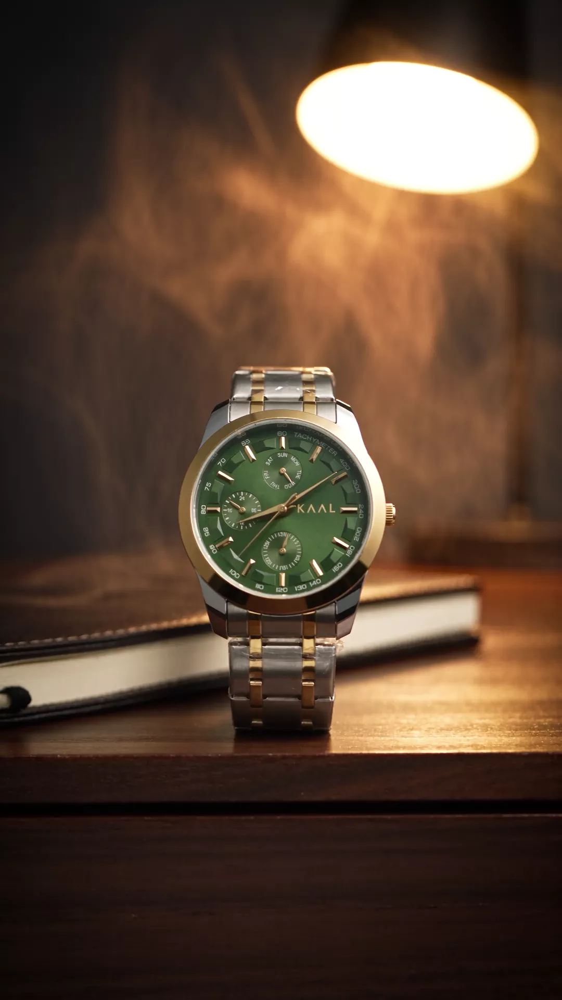
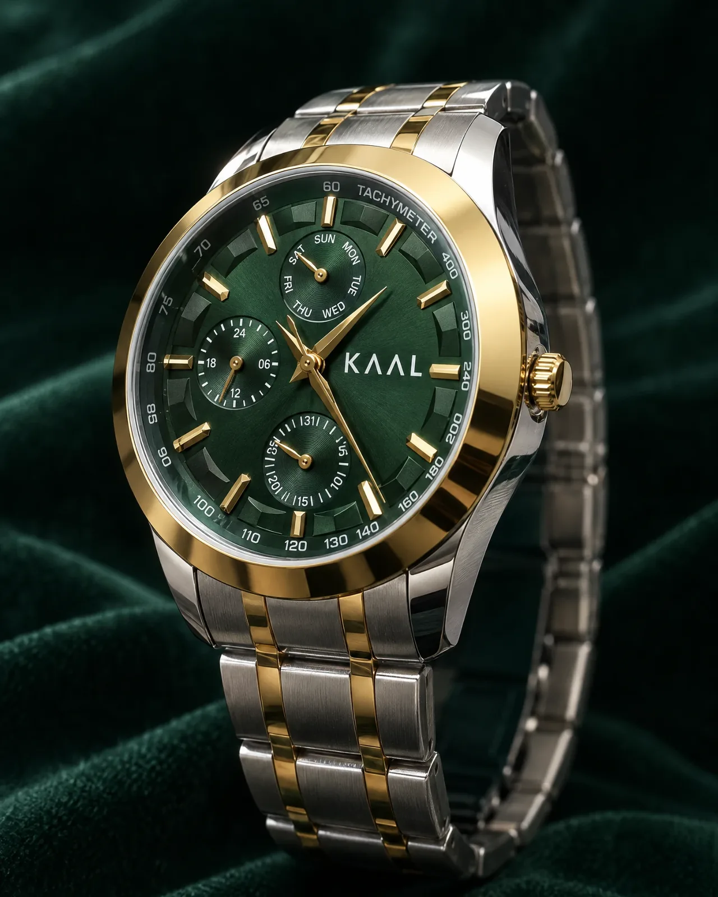
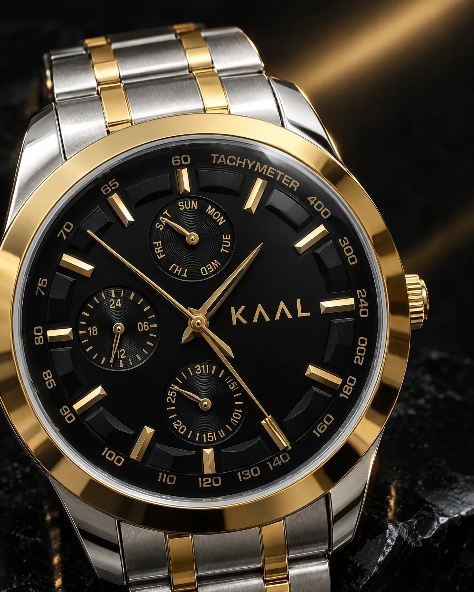
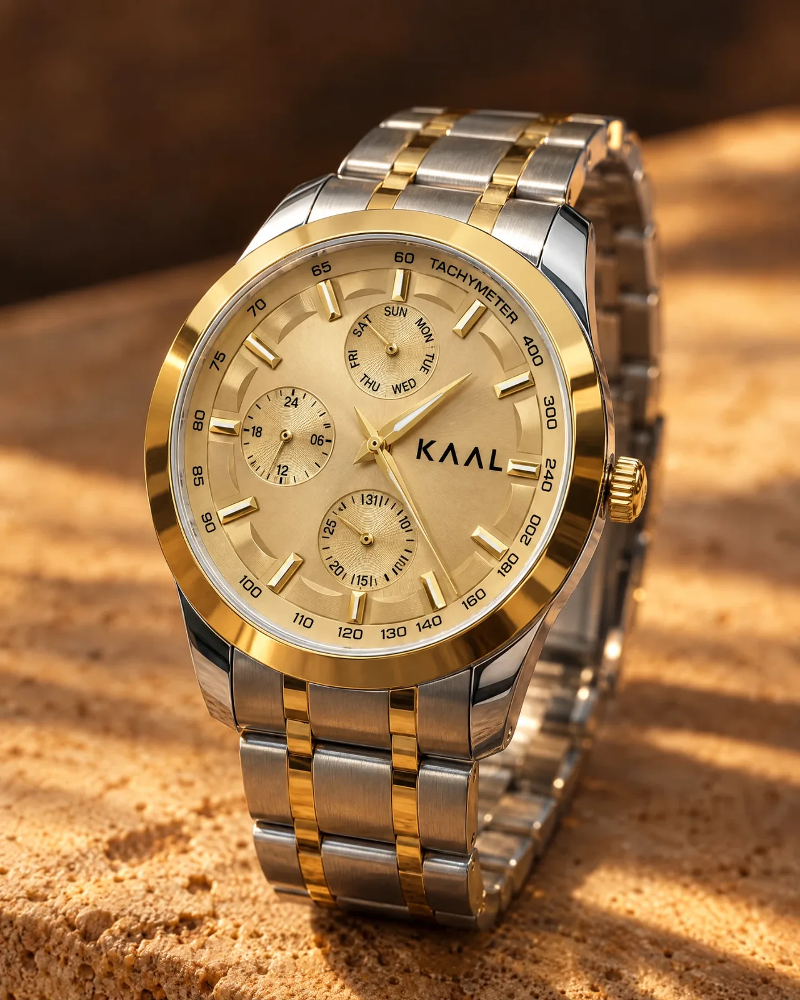
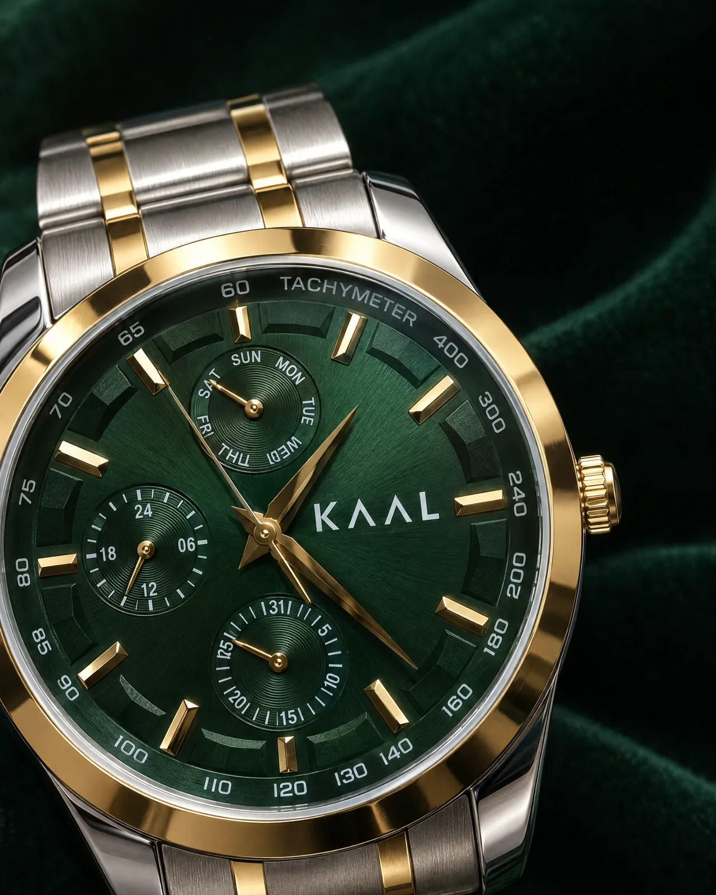

Series 01 · Twenty pieces
KAAL means time.
In the same language, it means the end of it.
Twenty watches carry this design.
Then it is retired, and never drawn again.
01 · The rule
Most brands draw a watch, then make it forever.
We are making twenty. When the twentieth ships, Series 01 closes. There is no second run, no Mark II, no anniversary reissue, and no quiet return in a different strap.
The design retires with the twentieth buyer. That is the whole promise, and it is the only one that cannot be walked back.

02 · Four faces
One case. Four faces.
Twenty numbers.
You do not choose the face. You choose a number, and the number already has one. Every number was given its dial before this page went live.

Jade
04 · 07 · 11 · 15 · 20
Onyx
02 · 05 · 09 · 13 · 18
Brass
03 · 08 · 12 · 16 · 19
Bone
01 · 06 · 10 · 14 · 17
03 · Jade
Green reads black until the light finds it.
Sunray brushed, lacquered, then cut by the same gold bezel every piece carries. In a room it is a dark dial. Under a window it is not.

04 · Onyx
Rain is not an event.
Series 01 is water resistant. Caught in weather, washed at a basin, worn through a downpour on the way to somewhere better: none of that is a story, and none of it is your problem.

05 · Brass
The loudest of the four. Still quiet.
A full brass dial is a decision, not a default. It is the piece in the series that does not wait to be noticed, and the one most likely to go first.

06 · Bone
Nothing to hide behind.
A pale dial shows every flaw in a finish, which is exactly why it is in the series. Day ring, twenty four hour counter and pointer date, all legible at arm's length in daylight.

07 · The hands
Every case is finished by hand.
By people who have spent their working lives doing this and nothing else. Not a season of it. A life of it.
That is why twenty takes the time twenty takes, and why every piece is opened, checked and closed again before it is boxed. Nothing leaves on a Friday because the week is ending.
- Case
- Finished by hand
- Inspection
- Every piece, every time
- Dispatch
- Five days
Each one worked individually, which is why no two are perfectly identical and why that is the point.
Checked and closed again before it is packed. None of the twenty ships unseen.
Order to door, anywhere in India. The inspection is inside those five days, not after them.
08 · The heart
A watch is a case, a dial, a bracelet, and one part that is actually alive.
The movement is the only thing in there keeping time. Everything else is housing. So the movement is the part we put our name behind, and we say so plainly instead of printing a number on a card and hoping nobody reads it.
Two years on the movement. Not the strap, not the glass, not a scratch you put there. The heart.

09 · The door
Seven days.
Wear it. If it is not you, send it back unworn and unmarked inside seven days and we refund it. We will not ask why.
And we will not sell to you again.
Your number goes back to the twenty, and somebody else gets it. That is not a threat. It is what a closed edition means when it is real.
This is not for someone who needs a watch to speak for them.
It is for someone who has already been heard.
10 · The twenty
Eighteen remain.
Pick the number you want. The face it carries is already decided, and it is shown on the number. Struck numbers are gone.